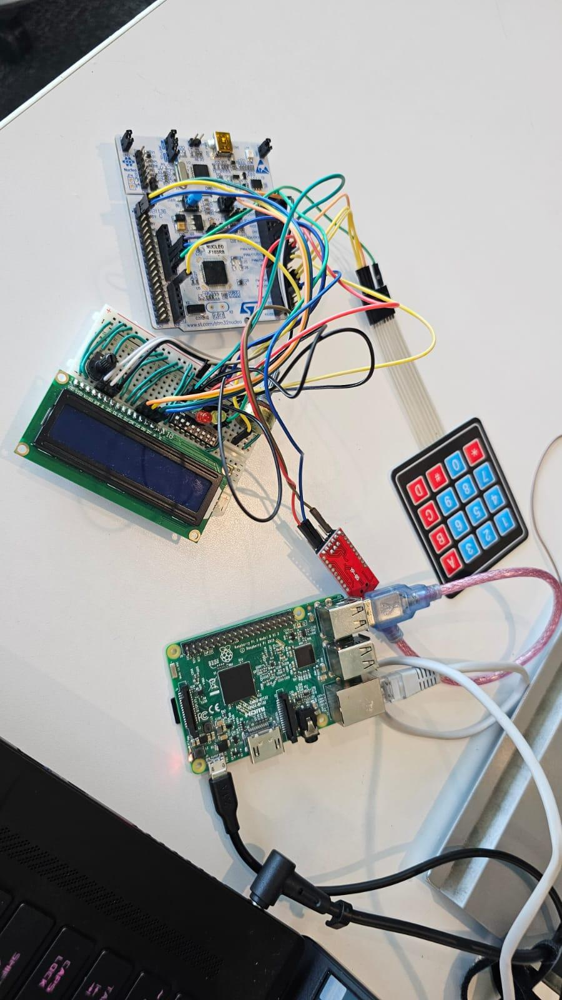
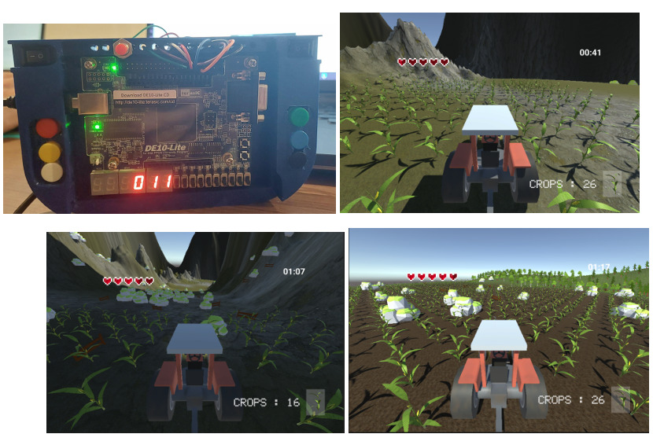
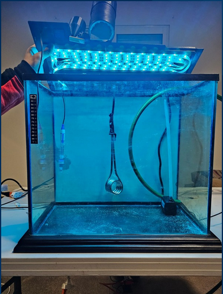
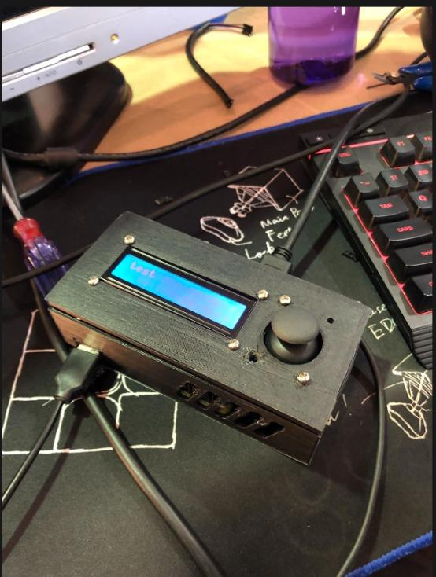

I am a senior full-time student pursuing a B.S. in Robotics and Digital Systems Engineering at Tecnológico de Monterrey since 2022 with expected graduation in 2026. Currently a General Visting Exchange Student of Computer Science and Technology at Beijing Institute of Technology who completed a month-long summer program for Emerging Technologies in Electronics Engineering.
Avid Software and Electronics and Embedded Systems Member of the Unmanned Surface Vehicle project at VantTec since 2023 and participant of several international robotics competitions and researcher at the Multi-Robotic Systems Laboratory in multi-agent robotic and unmanned aerial vehicle experiments. Currently learning about and developing autonomous navigation, control systems, computer vision, and AI projects.
Final project of the "Intelligent Robotics" undergraduate course where Closed-Loop PID and Image-Based Visual Servoing (IBVS) Control, Deep Learning, Classical Computer Vision, and Embedded Systems learnings are applied to a differential-drive robot named PuzzleBot provided by Manchester Robotics Ltd. capable of navigating autonomously in a structured environment. This was made possible by the guidance and teachings of professors Dr. Luis Alberto Muñoz Ubando, Mario Guillermo Martínez Guerrero, and Arturo Eduardo Cerón López.
🎯 Key features:
🎥 Demo highlights:
The Unmanned Surface Vehicle (USV) consists of an autonomous boat project carried out within the student group VantTec team.
This project has received multiple awards which are listed below:
Project developed with the guidance and assistance of professor in control systems Dr. Luis Guerrero Bonilla at the Multi-Robotic Systems Laboratory (MRSL) at the Tecnológico de Monterrey campus from the city of Monterrey. implements a MATLAB-based interface for automatic discovery, connection, and control of multiple mobile robots (Puzzlebots) in a ROS2 environment. It connects to Vicon motion capture topics for real-time position feedback, establishes ROS2 publishers for wheel velocity commands, and organizes all communication into a MATLAB object for streamlined multi-robot operation.
🎯 Key features:
Final project of the "Unmanned Aerial Vehicles" module of the "Intelligent Robotics" course taught by engineer in communications, electrical engineering and control systems Dr. Herman Castañeda. It consisted of the a DJI RoboMaster TT unmanned aerial vehicle with Image-Based Visual Dynamic Servoing capabilities in order to patrol and monitor the activity of a differential drive robot. This was performed at the Multi-Robotic Systems Laboratory.
Final project of the Kinematics module for dexterous manipulation in a three-fingered robotic hand with 9 D.O.F.
To learn more about the Fixed-Point Rolling-Sliding Algorithm implemented in this project, check out the following resource: https://ieeexplore.ieee.org/document/525326
View on GitHubMain project for the undergraduate course "Robotics Fundamentals" which applies Digital Control System Design, ROS2 Interfacing, micro-ROS, and Experimental Mathematical Model Coefficients Determination and Controller Performance Validation. This project was made in collaboration with Manchester Robotics Ltd. as a training partner. The project aimed to precisely control the velocity of a DC motor.


Main project of the undergraduate course "Design of Advanced Embedded Systems" which implements Design and Analysis of Algorithms, Digital Signal Processing, Shared-Memory Architecture, and Communication Interfaces. This project was made in collaboration with John Deere as a training partner.

This project applied Classic/Modern Control Theory, Temporal Analysis, Computerized Control, and System Identification to regulate a DC motor's shaft position using an Analog PID Controller.

This project applied Classic/Modern Control Theory, Temporal Analysis, Computerized Control, and System Identification to regulate a DC motor's shaft position using a Digital PID Controller.

Main project for the undergraduate course "System Design on Chip" which applies STM32 Microcontrollers, Raspberry Pi Microprocessors, Computational Organization, Embedded Linux, and Real-Time Operating System (RTOS). This project was made in collaboration with John Deere as a training partner.

Main project of the undergraduate course "Design with Programmable Logic" which implemented Unity Game Development, VHDL Programming, the Quartus Prime Intel software, State Machines, Field-Programmable Gate Arrays (FPGAs), and Soft-Core Processors. This project was made in collaboration with John Deere as a training partner.

Main project for the undergraduate course "Internet of Things Implementation" and was selected among many others to be presented in the Expo Ingenierías 2023 event held in Tecnológico de Monterrey in the city of Monterrey, Mexico.

According to UpCity, as of 2022, only 50% of business owners and tech experts have a cybersecurity plan in place, with just 43% feeling prepared for a cyberattack. Meanwhile, cybercrime has cost U.S. businesses over $6.9 trillion. This growing threat puts both businesses and consumers at risk, as cybercriminals exploit personal data, hijack digital resources, and deceive victims.
Download my latest CV for more details about my education, experience, and technical skills.
Download Resume in English Download Resume in SpanishEmail: christianvillarrealt@outlook.com
GitHub: github.com/christianrvillarrealt
LinkedIn: linkedin.com/in/christianrvillarrealt